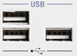
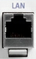
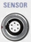
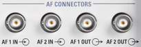

You find various control interface connectors and the AF connectors at the bottom of the front panel.
 |
Single universal serial bus connectors of type A (master USB), used to connect for example a keyboard, a mouse or a USB stick. All front panel USB connectors comply with standard USB 2.0; refer to the data sheet.

USB devices with external power supply must never feed back current into the 5 V power supply of the USB interface. Before using such a device, ensure that there is no connection between the positive pole of the power supply and the +5 V power pin of the USB interface (VBUS).
The length of passive connecting USB cables must not exceed 1 m. The maximum current per USB port is 500 mA. |
 |
Eight-pin RJ45 socket for connection to a local area network (LAN). It supports 100 Mbit/s and 1 Gbit/s. A second LAN connector labeled LAN REMOTE is available on the rear panel of the instrument.
See also "Remote Operation in a LAN".
 |
Lemosa six-pin socket for NRP-Z27/-Z28 power sensors. An external power sensor can be used to monitor the power of an external signal or calibrate an RF source.
The SENSOR connector controls the power sensor but also provides the power supply and trigger signals.

The audio frequency (AF) BNC connectors are installed together with an audio board (option R&S CMW-B400B or R&S CMW-U400).
They are used for input and output of analog audio signals in the context of audio measurements.